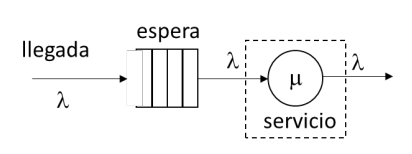
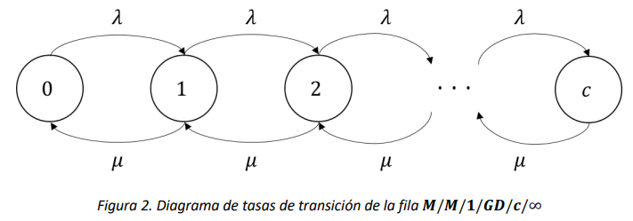
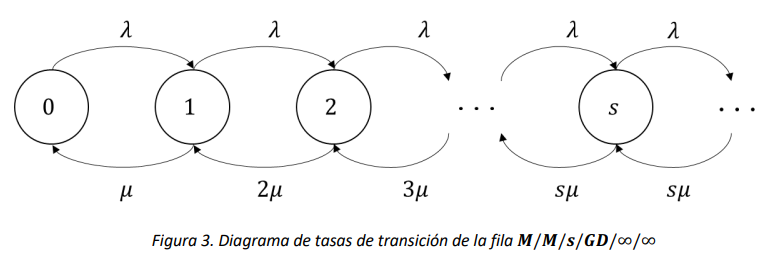
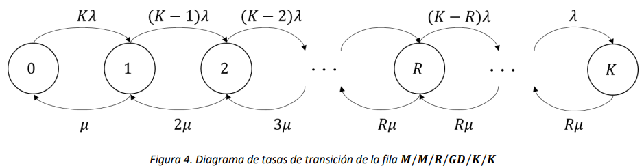

Teoría de Colas#
En este capítulo se presenta el desarrollo de las medidas de desempeño para algunos procesos de nacimiento y muerte, también conocidos como filas en Teoría de Colas.
Notación Kendall-Lee#
Para poder analizar las medidas de desempeño de algunas de las diferentes configuraciones de filas que se pueden presentar en un sistema, resulta de utilidad abordar primero el concepto de notación Kendall-Lee. En dicha notación se encuentran 6 posiciones:
Donde:
\(A\): Representa el tipo de proceso estocástico o distribución de probabilidad asociada a la llegada de entidades al sistema.
\(B\): Representa el tipo de proceso estocástico o distribución de probabilidad asociada a la atención o servicio de entidades en el sistema.
\(C\): Representa el número de servidores con los que cuenta el sistema para la atención de las entidades.
\(D\): Representa la disciplina o el comportamiento en la atención de las entidades en el sistema.
\(E\): Representa la capacidad máxima de entidades que pueden encontrarse al mismo tiempo el sistema, tanto en fila como en servicio.
\(F\): Representa el tamaño de la población de la cual provienen las entidades por fuera del sistema.
En general, para los elementos \(A\) y \(B\), se utiliza una letra \(M\) cuando el proceso correspondiente sigue un Proceso de Poisson con una tasa respectiva. Para cualquier otra distribución que no siga un Proceso de Poisson, se utiliza una letra \(G\) que representa una distribución general (i.e. una distribución uniforme continua para los procesos de arribo y/o atención de entidades). Para el parámetro D, se utiliza suelen especificar las letras \(GD\) para hacer referencia a una disciplina general de atención de entidades, siendo esta disciplina “primero en entrar, primero en salir” (o FIFO, por sus siglas en inglés). Por último, para los parámetros \(C,\ E\) y \(F\), se puede especificar un número natural correspondiente para cada parámetro o, si dichos parámetros no están acotados por un número específico, se puede representar cada valor con el símbolo \(\infty\) seg´´un corresponda.
La fila \(\mathbf{M/M/1/GD/\infty/\infty}\)#
De su notación de Kendall, esta es una fila en la cual el tiempo entre arribos y el tiempo de servicio siguen una distribución exponencial (con tasas que denotaremos \(\lambda\) y \(\mu\) respectivamente), sólo hay un servidor, y tanto la capacidad del sistema como el tamaño de la población son infinitos. La notación resumida de Kendall para esta cola es \(M/M/1\), ya que los últimos tres términos normalmente se omiten.
Así, la fila descrita se puede modelar como una Cadena de Markov de tiempo continuo con variable de estado \(X(t) = número\ de\ entidades\ en\ el\ sistema\ en\ el\ instante\ t\). El espacio de estados de la cadena es el conjunto infinito de los números enteros no-negativos \(S = \{ 0,1,2,\ldots\}\). Así, la Figura 1 muestra el diagrama de tasas de transición correspondiente.

Note que esta cadena es un proceso de nacimiento y muerte, por lo que las probabilidades de estado estable (si existen) tienen la forma:
Donde \(c_{j}\) se calcula a partir de \(\lambda\) y \(\mu\) así:
Así mismo, para conocer todas las probabilidades de estado estable sólo es necesario encontrar \(\pi_{0}\) como en cualquier proceso de nacimiento y muerte:
La existencia de \(\pi_{0}\), y por lo tanto, de todas las probabilidades de estado estable, dependen de la serie infinita \(\sum_{j = 0}^{\infty}\left( \frac{\lambda}{\mu} \right)^{j}\), que converge solo si \(\left( \frac{\lambda}{\mu} \right) < 1\). Esta condición es consistente con la interpretación física de la fila, porque si \(\mu < \lambda\), las entidades llegan a la fila más rápido de lo que el servidor las puede atender, por lo que en el largo plazo la fila tendrá una longitud infinita. En este caso, todos los estados de la cadena serán transitorios, y por la tanto, si bien la cadena es irreducible, no es ergódica, y las probabilidades de estado estable no existirán. Así, denotaremos como \(\rho = \frac{\lambda}{\mu}\) la relación entre las tasas de llegada y servicio, y calculamos las probabilidades en estado estable en función de \(\rho:\)
La segunda igualdad en la expresión de arriba se obtiene de las propiedades de las series geométricas, las cuales, cuando la razón de la serie (en este caso el \(\rho\)) es estrictamente menor a 1, convergen al valor finito \((1 - \rho)^{- 1}\)
Ahora, es de interés conocer la utilización del servidor, es decir, la fracción de tiempo que el servidor está ocupado en el largo plazo:
Entonces, las probabilidades de estado estable tienen la forma \(\pi_{j} = (1 - \rho)\rho^{j},\ \ j \geq 0\). Así, es posible conocer el número esperado de entidades en el sistema \((L)\) como sigue:
De forma similar se puede encontrar el número esperado de entidades en servicio \((L_{s})\):
Es también posible obtener \(L_{s}\) a través de la aplicación de la Ley de Little al subsistema constituido por el servidor de la cola. Como se ilustra en la Figura 1, dado que la \(M/M/1\) es ergódica, el flujo de entidades que salen del sistema debe ser igual en intensidad al flujo de entidades que ingresan al sistema, es decir, ambos tienen que ser de tasa \(\lambda\). Dada la naturaleza secuencial del modelo, primero la espera y después el servidor, también el flujo de entidades que pasan de esperar a servicio debe ser de tasa \(\lambda\).

Entonces, aplicando la Ley de Little (\(L_{s} = \lambda{\cdot W}_{s}\)) al sistema encerrado en el rectángulo con línea discontinua, podemos obtener que en el estado estacionario el número promedio de entidades en servicio es igual a la tasa de llegada \(\lambda\) por el tiempo promedio que cada una de ellas pasa en servicio, lo cual es \(W_{s} = \frac{1}{\mu}\). Se obtiene que:
El número esperado de entidades en fila \((L_{q})\) es:
Finalmente, usando la ley de Little se pueden encontrar los tiempos promedio de permanencia en el sistema \((W)\):
Dado que el tiempo promedio en servicio es \(W_{s} = \frac{1}{\mu}\), podemos calcular el tiempo promedio en espera de cada entidad como sigue:
La fila \(\mathbf{M/M/1/GD/c/\infty}\)#
De su notación de Kendall, ésta es una fila en la cual el tiempo entre arribos y el tiempo de servicio siguen una distribución exponencial (con tasas que denotaremos \(\lambda\) y \(\mu\) respectivamente), sólo hay un servidor, el tamaño de la población es infinito, y el sistema tiene capacidad de \(c\) entidades en total, es decir, en fila y en servicio. La notación resumida para esta cola es \(M/M/1/c\).
Así, la fila descrita se puede modelar como una Cadena de Markov de tiempo continuo con variable de estado \(X(t) = número\ de\ entidades\ en\ el\ sistema\ en\ el\ instante\ t\). Así, la Figura 2 muestra el diagrama de tasas de transición correspondiente.

Note que esta cadena es un proceso de nacimiento y muerte, y qué además siempre es ergódica ya que tiene espacio de estados finito, por lo que las probabilidades de estado estable siempre existen y tienen la forma:
Donde \(c_{j}\) se calcula a partir de \(\lambda\) y \(\mu\) así:
Entonces, para conocer todas las probabilidades de estado estable solo es necesario encontrar \(\pi_{0}\) como en cualquier proceso de nacimiento y muerte:
Es importante observar que para este modelo el \(\rho\) no corresponde a la utilización del sistema, y que puede asumir valores arbitrariamente grandes. En efecto, para calcular la utilización de este sistema se debe considerar que cuando el sistema está en el estado \(c\) (es decir, hay \(c - 1\ \)entidades en fila) las llegadas se pierden. Por esto, se calcula una tasa efectiva de entrada al sistema \((\lambda_{e})\) de la siguiente forma:
Y la utilización del sistema es \(\frac{\lambda\left( 1 - \pi_{c} \right)}{\mu} = \rho(1 - \pi_{c})\).
Finalmente, se calculan los números esperados de entidades y tiempos promedio de forma similar a la fila \(M\text{/}M\text{/}1\text{/}GD\text{/}\infty\text{/}\infty\):
Note que las fórmulas mencionadas fallan cuando \(\rho = 1\), sin embargo, en este caso se tiene que:
Además, ya que para cualquier estado \(j\ \)se tiene que \(c_{j} = 1\), todos los \(\pi_{j} = \pi_{0}\). Esto quiere decir que, en estado estable, el sistema estará en cualquier estado con la misma probabilidad. A partir de esta definición de \(\pi_{j}\) se pueden calcular las demás medidas de desempeño como se hizo anteriormente. En particular, se puede mostrar que cuando \(\rho = 1\) se tiene que \(L = \frac{c}{2}\).
La fila \(\mathbf{M/M/s/GD/\infty/\infty}\)#
De su notación de Kendall, esta es una fila en la cual el tiempo entre arribos y el tiempo de servicio siguen una distribución exponencial (con tasas que denotaremos \(\lambda\) y \(\mu\) respectivamente), hay múltiples servidores, y tanto la capacidad del sistema como el tamaño de la población son infinitos. La notación de Kendall resumida para esta fila es \(M/M/s\).
Así, la fila descrita se puede modelar como una Cadena de Markov de tiempo continuo con variable de estado \(X(t) = número\ de\ entidades\ en\ el\ sistema\ en\ el\ instante\ t\). Así, la Figura 3 muestra el diagrama de tasas de transición correspondiente.

Para analizar esta fila en estado estable, es necesario que todos los estados sean recurrentes, lo que se cumple siempre y cuando \(\frac{\lambda}{s \cdot \mu} < 1\). Esta cantidad se denota como \(\rho_{s}\) y es la utilización del sistema.
Note que esta cadena es un proceso de nacimiento y muerte, por lo que las probabilidades de estado estable (si existen) tienen la forma:
Donde \(c_{j}\) se calcula a partir de \(\lambda\) y \(\mu\) así:
Y \(\pi_{0}:\)
Entonces, es posible calcular el número esperado de entidades en cola:
Además, se conoce que \(W_{s} = \frac{1}{\mu}\) y usando la ley de Little se obtiene \(L_{s} = s{\cdot \rho}_{s} = \frac{\lambda}{\mu}.\) Es importante observar que, para este modelo, la cantidad \(\frac{\lambda}{\mu}\) no corresponde a la utilización sino al número promedio de entidades en servicio en estado estacionario.
Entonces, la cantidad esperada de entidades en el sistema es:
Finalmente, \(W\) y \(W_{q}\) se pueden encontrar a partir de \(L\) y \(L_{q}\) respectivamente usando la ley de Little.
La fila \(\mathbf{M/M/R/GD/K/K}\)#
De su notación de Kendall, ésta es una fila en la cual el tiempo entre arribos y el tiempo de servicio siguen una distribución exponencial (con tasas que denotaremos \(\lambda\) y \(\mu\) respectivamente), hay múltiples servidores, y tanto la capacidad del sistema como el tamaño de la población son finitos.
Así, la fila descrita se puede modelar como una Cadena de Markov de tiempo continuo con variable de estado \(X(t) = número\ de\ entidades\ en\ el\ sistema\ en\ el\ instante\ t\). Así, la Figura 4 muestra el diagrama de tasas de transición correspondiente.

Note que esta cadena es un proceso de nacimiento y muerte, y qué además siempre es ergódica, por lo que las probabilidades de estado estable siempre existen y tienen la forma:
Donde \(c_{j}\) se calcula a partir de \(\rho = \frac{\lambda}{\mu}\) así:
Para esta fila no existen fórmulas para \(\pi_{0},\) y por lo tanto tampoco existen para \(L\) o \(L_{q}\), que se deben calcular a partir de las probabilidades de estado estable:
Por otro lado, \(L_{s}\) se puede calcular a partir de \(W_{s} = \frac{1}{\mu}\) usando la ley de Little. Sin embargo, para poder usar la ley de Little (y calcular la utilización del sistema) se debe encontrar una tasa promedio de entrada de entidades al sistema que se denotará como \(\overline{\lambda}\) (note en la Figura 4 que la tasa de entrada depende del estado).
Con el valor de \(\overline{\lambda}\) y encontrando \(L\) y \(L_{q}\) como se mencionó anteriormente, es posible encontrar \(W\) y \(W_{q}.\)
La fila \(\mathbf{M/G/1/GD/\infty/\infty}\)#
De su notación de Kendall, esta es una fila en la cual el tiempo entre arribos sigue una distribución exponencial (con tasa que denotaremos \(\lambda\)), hay un único servidor, tanto la capacidad del sistema como el tamaño de la población son infinitos, y el tiempo de servicio sigue alguna distribución de probabilidad. La notación de Kendall resumida para esta fila es \(M/G/1\).
Así, la fila descrita se puede modelar como un proceso estocástico con variable de estado \(X(t) = número\ de\ entidades\ en\ el\ sistema\ en\ el\ instante\ t\). Sin embargo, dado que el tiempo de servicio no necesariamente cumple la propiedad Markoviana, \(\{ X(t),\ t \geq 0\}\) no será en general una Cadena de Markov. Aunque para este modelo no es posible encontrar probabilidades en estado estable como se ha hecho hasta ahora, si es posible realizar ciertos análisis sobre las medidas de desempeño del sistema.
Para esto, es necesario conocer por lo menos la media \((\frac{1}{\mu})\) y la varianza \((\sigma^{2})\) del tiempo de servicio. Así, es posible calcular la utilización del servidor usando la ley de Little sobre el subsistema compuesto únicamente por el servidor así: \(\rho = L = \lambda W = \frac{\lambda}{\mu}\).
Además, usando la fórmula de Pollaczek–Khinchine es posible encontrar el número esperado de clientes en espera en el sistema en el largo plazo:
Entonces, también es posible conocer \(L:\)
Luego, \(W\) y \(W_{q}\) se calculan a partir de la ley de Little. Note que el valor de \(L_{q}\) (y por lo tanto de \(L\)) incrementan con la varianza del tiempo de servicio, lo cual es un ejemplo de un resultado general para los sistemas con filas:
Al aumentar la varianza de los tiempos de llegada y de servicio, los indicadores de rendimiento de un sistema con fila empeoran, es decir que el número promedio de entidades (en fila y totales) así como los tiempos (de espera y de permanencia en el sistema) aumentan.
Finalmente, note que la fórmula de Pollaczek–Khinchine es una generalización del cálculo del \(L_{q}\) pues, si se reemplaza \(\sigma^{2}\) por la varianza de una distribución exponencial con tasa \(\mu\), la fórmula del \(L_{q}\) se reduce al caso de una fila \(M/M/1\).
La fila \(\mathbf{G/G/\infty/GD/\infty/\infty}\)#
De su notación de Kendall, esta es una fila en la cual el tiempo entre arribos y el tiempo de servicio siguen alguna distribución de probabilidad (con tasas que denotaremos \(\lambda\) y \(\mu\) respectivamente), hay infinitos servidores, y tanto la capacidad del sistema como el tamaño de la población son infinitos. La notación de Kendall resumida para esta cola es \(G/G/\infty\).
Así, la fila descrita se puede modelar como un proceso estocástico con variable de estado \(X(t) = número\ de\ entidades\ en\ el\ sistema\ en\ el\ instante\ t\). Sin embargo, dado que ni el tiempo entre llegadas ni el tiempo de servicio necesariamente cumplen la propiedad Markoviana, \(\{ X(t),\ t \geq 0\}\) no será en general una Cadena de Markov. Aunque para este sistema no es posible encontrar probabilidades en estado estable como se ha hecho hasta ahora, sí es posible realizar ciertos análisis sobre las medidas de desempeño del sistema.
Ya que el número de servidores es infinito, la utilización de este sistema es cero, pues todas las entidades que lleguen encontrarán un servidor disponible y el número de servidores ocupados será siempre despreciable con respecto al número total de servidores disponibles (que es infinito). Además, nunca se formará una fila, por lo que \(L_{q} = W_{q} = 0\).
Finalmente, \(W_{s} = \frac{1}{\mu}\) y usando la ley de Little \(L_{s} = \frac{\lambda}{\mu}.\)
La fila \(\mathbf{M/M/\infty/GD/\infty/\infty}\) (o \(\mathbf{M/M/\infty}\))#
El análisis para esta fila es similar al de la fila \(G\text{/}G\text{/}\infty/GD\text{/}\infty\text{/}\infty\), y las medidas de desempeño se calculan de la misma forma. Sin embargo, dado que en este caso los tiempos involucrados en el sistema siguen una distribución exponencial, el proceso estocástico subyacente sí es una Cadena de Markov, por lo que se pueden encontrar las probabilidades en estado estable así:
Ya que el número de servidores es infinito, la utilización de este sistema es cero, pues todas las entidades que lleguen encontrarán un servidor disponible y el número de servidores ocupados será siempre despreciable con respecto al número total de servidores disponibles (que es infinito). Además, nunca se formará una fila, por lo que \(L_{q} = W_{q} = 0\), igual que su contraparte \(G\text{/}G\text{/}\infty/GD\text{/}\infty\text{/}\infty\).